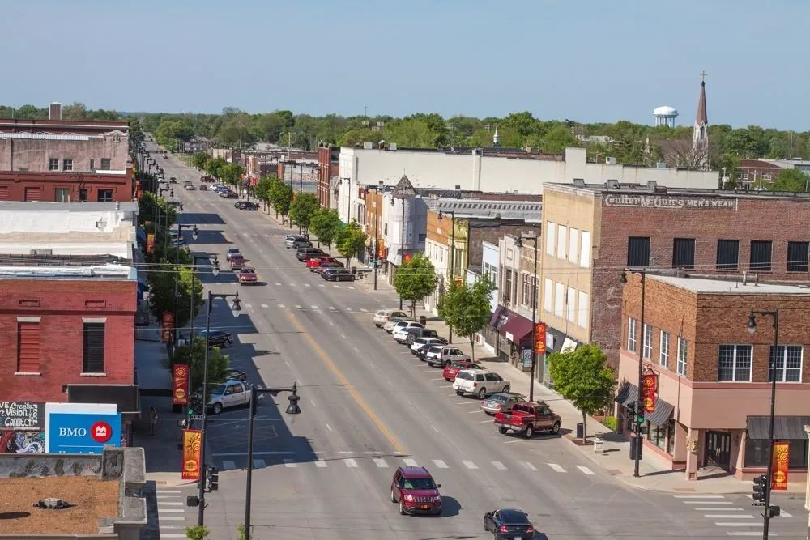
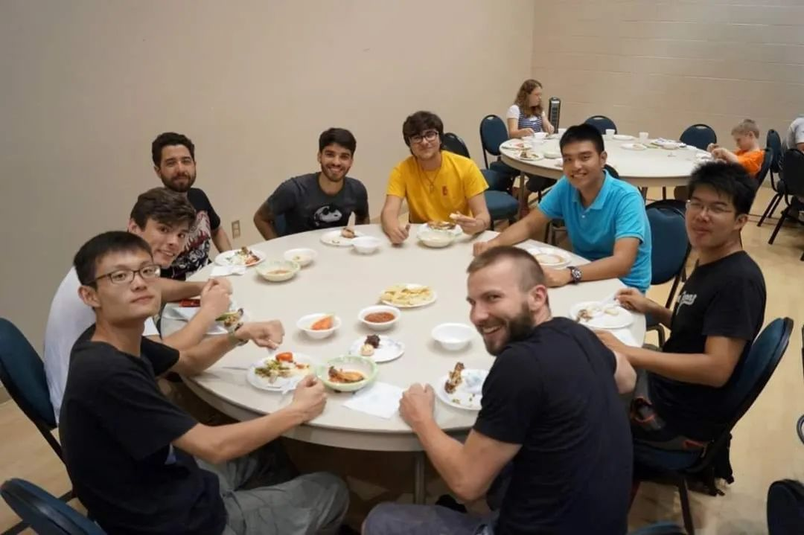
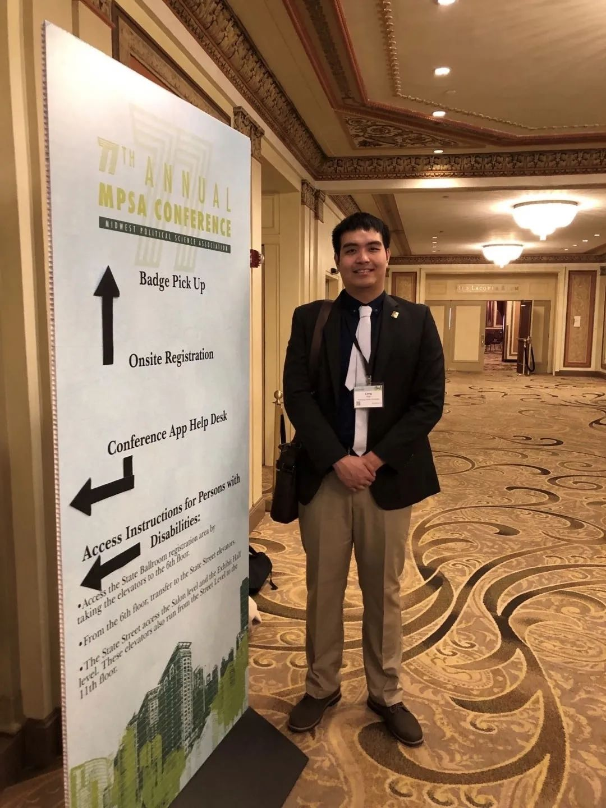
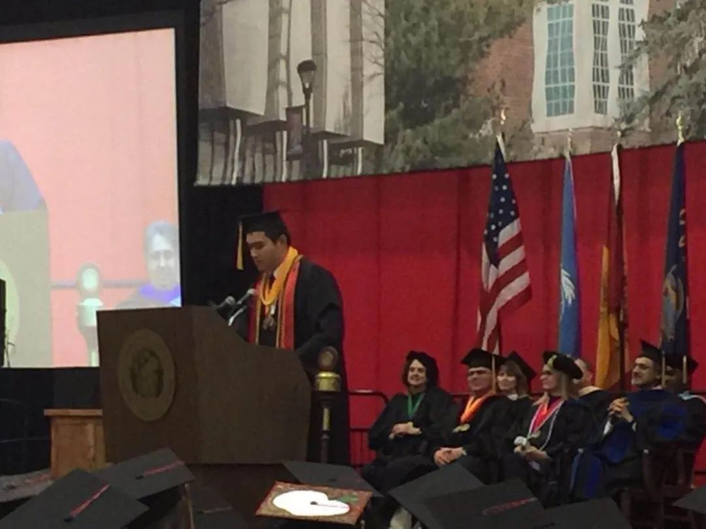
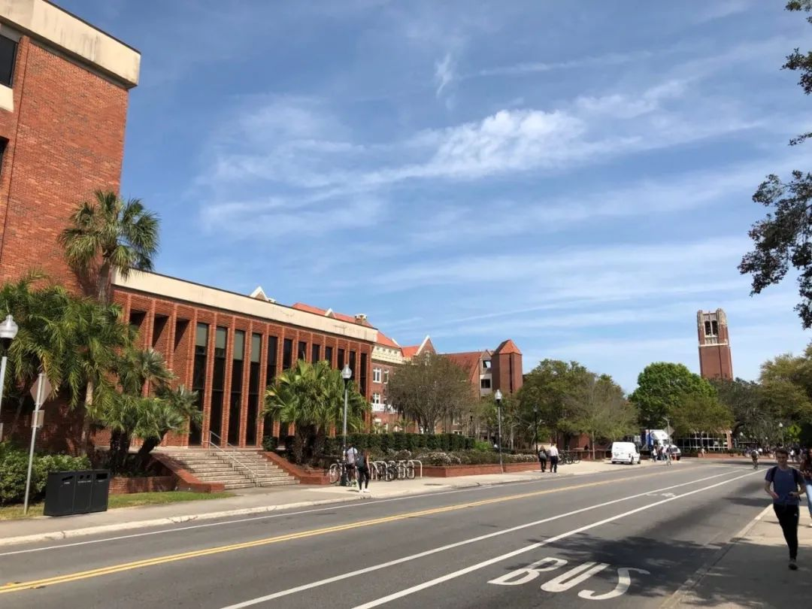

收录于合集 #留学纪实 4个

许多留美学生选择美国东西海岸地区作为自己的目的地，或者是南北部发达地区，因为这些地区的学术活动和工作机会相对较多。我最初的目的地则是一个较少人选择的地方，位于美国中部的堪萨斯州（Kansas）东南部的一个小镇。我于2013年在国内读完高中第一学年便来到美国，算是名副其实的小留学生。我在堪萨斯州度过了两年高中生活后，继续在州内完成了本科四年学业，又如愿被佛罗里达大学的政治科学博士项目录取。本文将主要从学习和校园生活两个方面，向读者们展现一个中国留学生在美国的求学经历，分享自己在美七年的领悟和感想。

文章简介
【本期作者】 肖龙；自高中起便来到美国；本科就读于：美国中部一所州立大学；现在佛罗里达大学攻读政治科学博士。
【排版】 马璐
【美编】 黄竹音
一、对美国之印象
在我们中国人眼里，对于美国最直观的印象便是纽约或洛杉矶的繁华，抑或是总统山和大峡谷的壮丽。当我最初走下飞机，脚踩美国土地的时候，映入眼帘的却只有一望无际的农田以及稀疏坐落其中的小镇和农舍。此等景象便是美国中西部地区，尤其是乡村地区的主要特征之一。如同世界上其他大国一样，美国的地理地貌十分多元，电影里常有的熙熙攘攘的繁华都市景观大多在东西海岸部分发达地区才可以看到。而许多中西部大平原地区，人烟稀少，甚至很难让人相信美国拥有世界第三大人口，仅次于中国和印度。
陪我度过六年高中和本科留学生涯的城镇便是一座典型美国中西部小镇。城市居民约两万，人口最集中的地方便是大学附近。这里不仅没有诸如地铁，公交等公共交通工具，就连出租车或优步等服务也都少之又少。若人们没有汽车的话，外出工作学习、购物会友等都是需要动腿的体力活。这一切使我这个从中国南方沿海大都市来的小留学生十分不适应。在之后与来自世界各地的国际生的交谈中，许多人也提到说此地跟自己当初心目中的美国形象相差甚远。 因此，有意出国留学的同学们应该尽早从多个方面了解备选学校所在地的环境和便利程度，并依据具体情况进行合理安排和选择。 有人可能喜欢大城市的便利，也有人会喜欢小城镇的安静。就我个人而言，这里民风淳朴，治安优良，人们友善，且消费便宜，是一个适合专心学习的好地方。

小镇中心街道。来源： Smart Growth America.org
美国人对于中国的看法是比较肤浅的。以我自己的经验，不论收入或受教育程度，大部分的普通美国人对于中国的认知仍然停留在跟 “中国制造” 有关的所谓世界工厂的形象中，对中国近几十年来在各个方面所取得的翻天覆地的成就知之甚少。以我之前所在的堪萨斯州为例，“会功夫”、 “数学好”、 “懂电脑” 构成了美国人对于中国人的主要标签。当然，堪萨斯州作为美国相对保守闭塞的州，与外国人的接触也相对少一些，而且城市地区和乡村地区的国际化接受程度亦不一样。比如，在我目前居住的佛罗里达大学城，就有更多人拥有对中国更加多元化、更加深入的认知。
然而，在我的印象里， 撇开美国政府对中国政府日益加深的敌意，绝大部分美国人对于中国人是不反感的。 在我的7年留学时光里，我极少从美国人处感觉到仇恨或歧视。相反，美国人对于所谓的文化差异是普遍比较敏感的。在日常谈话中，许多美国人会对我的独特文化背景感兴趣，并主动询问我是否能够理解他们的某些话题，比如有关美国民俗或流行文化的讨论。在我的高中和大学的课程中，在涉及到中国的话题中，许多老师和学生也会主动在课上课下询问我的看法，并参考我的意见展开更为深入的探讨。 通常，在这样的对话里，许多先入为主的偏见和疑惑也能够被顺势解开。
二、中国学生在美国 ****
作为一个在美国学习生活超过七年的中国学生，最令我印象深刻的便是美国学校对于国际学生的友善，为多元校园文化所做出的努力，以及对于不同声音和意见的尊重。这些特质则主要反映在了学校无差别提供给每个学生的发展机遇上。尤其是在高中之后，我愈发感觉到只要愿意努力，不同类型的学生们在美国大学里均可以找到属于自己的舞台并做出一番成绩。在这种多元化理念下，来自中国的我则是十足的受益者。
我在美国就读的高中是一所百年私立学校，而我则是近百年来该校第一位来自中国大陆的留学生和毕业生。初来乍到，虽然我的语言水平很差，而且时常需要借助翻译机才能与他人沟通，但是这并没有让我的高中生活大打折扣。老师们一直在不遗余力地帮助我适应陌生学习环境，解释知识点。有些老师甚至还愿意单独为我补课。周围的美国同学们可能会因为没有接触过外国人而不熟悉如何跟我交流，但是并没有因为我的身份而疏远我。经过自己的学习适应，还有在身边人的帮助下，我在一年之内便能够独立流畅地与其他人交流了。后来，因为老师同学和亲人的鼓励，我又逐渐发掘了自己的许多兴趣，比如声乐、表演、剪辑等，并尝试参加了许多文体活动，诸如篮球、田径、视频比赛、才艺表演、话剧，等等。 应该说，我能够有一个收获颇丰的美高生活，并为接下来在美国的大学学习生活打下良好基础，与周围人对于外国学生的友好和不歧视是分不开的。 在我顺利毕业之后，学校也尝试继续国际生项目，并陆续招收了更多来自其他国家的学生。
我在大学里的经历则更可以反映美国大学校园对于多元化的欢迎。我的本科院校与我的高中虽然在同一个小镇上，两者的国际氛围却有很大的不同。前者自上个世纪20年代初便开始招收各国外国学生，在操作国际项目上趋于成熟，有专门的国际办公室及各种下属文化社团，也有专属的驻外招生官和国际校友会。
另外，宗教信仰是美国人的日常生活中的一个重要组成部分，而教会则是许多美国社区的社交和集会场所。在许多我认识的留学生心里，他们对于美国社会的最初印象便是从当地的教会组织开始的，因为国际生欢迎周（orientation）的全部晚餐均是由当地数个教会无偿提供。我在国际办公室做志愿者的工作时，也直观地感觉到了当地教会对国际生的真诚欢迎，且并非是很多国人以为的那样有诸如传教、招新、纳捐的目的性。我认为，这也是美国社会对于国际留学生的接纳的一个重要体现。

笔者与同级国际新生在教会内享用晚餐，图中国际生来自中国，芬兰，巴西，巴拉圭四个国家。图片来源：笔者自摄
但是真正使我受益匪浅的， 除了学校浓厚的国际氛围，则是学校提供给所有国内外学生的发展机遇，以及对学生的能力建构的鼎力支持。 大体上分为以下几点：
（1） 各种学生组织满足学生自身兴趣和提升自我价值。 美国大学校园的学生组织遍布各个领域。从钓鱼社到学生政府（Student Government）；从兄弟/姐妹会（Fraternity/Sorority）到各个学科的荣誉生会（Honors Society）。不管是增加或拓展兴趣爱好，还是取得社会实践经验，抑或是为简历增光添彩，美国大学校园里的学生组织均可以满足大部分学生的需要。只要愿意为自己的组织努力付出，留给国际生的机会也是很多的。以我本人为例。我在大学期间的校园社团活动参与主要是以传播中国文化、替国际学生服务为目的，自己就先后参与过中国学生联合会，学生政府联合会，国际学生联合会等具有服务性质的学生组织。 （2） 院系支持学生和教授顺利开展学科活动。 大学的各科各系在每个财年都会将预算的一部分保留用来作为给教授们参加或举办各种学术年会和讲座的经费。这个费用不只给教授，同样也会拨给愿意参与的学生。不论国别，不论种族，只要愿意申请，便有机会拿到经费。在我的大三和大四两年里，我去外地参加了数场国家级别的社会科学年会，如美国中西部政治科学年会（MPSA）、美国行为与社会科学年会（AABSS），以及其他规模较小的校际学科年会。我在这些场合中就自己的研究课题向与会学者们汇报讲解，得到了许多中肯的反馈意见，是我求学生涯中的宝贵财富。这些活动的差旅费均由系里报销。值得一提的是，我所在的政治科学系属于社会科学门类，总体上来讲是学校经费最为不足的学科之一。和其他美国大学一样，预算的大头都被商学院和STEM门类占去了。若是在并不算富有的政治科学系都可以获得全额差旅费支持，可以想见在其他院系则能够获得多得多的补贴。
笔者于2019年参加MPSA论坛。图片来源：笔者自摄
（3）充沛的奖学金和丰富的校内打工机会使学生们能够在拿到学费补助的同时，丰富社会实践经验。 美国大学生中，勤工俭学非常普遍，奖学金制度和校内外打工帮了很大忙。在我的学校里，除了所谓的助学贷款以外，大部分学生都以奖学金或打工来为自己和家里减轻学费负担。另一方面，作为国际学生，一般很难可以被允许在校外找工作，所以校内打工便成了唯一选择。校内工作岗位有很多，门槛相对较低，也一直都有招工岗位，缺点就是工资低（起始工资一般是所在州的最低时薪标准），工时少（不能超过20小时）。奖学金池是基于学校的财政和外界的募捐情况来定的，一般来说，平均绩点（GPA）和自述或推荐信等相关文书便是主要考察范畴。我在大学四年里，同时领取着来自国际办公室、社会科学基金、及音乐系三个部门发放的近十个奖学金，每年可以为我减免三分之一的学费。同时，我还先后做过剧院工作人员，办公室秘书，宿舍管理员，教授助理等工作，只有一个学期的时间是处于 “失业” 状态的。当然，校内打工最多只能赚到零头，真正补助的大头还得靠奖学金。
总而言之，美国大学里，能够给学生们把握的机会还是很多的。在学生组织里，无论国别，学生们都可以获得自己的一席之地。学术活动上，各个院系也非常乐意支持有想法的学生。奖学金和校内打工机会也可以让学生们在赚钱省钱的同时，丰富社会实践经历。作为一个中国学生，我不仅体会到了美国大学对于不同文化的包容性，也在学术、社团、经济三个方面获得了学校的支持和提携。本科毕业时，我荣幸地被推选为当届的优秀毕业生（最高荣誉，男女各一名），并在毕业典礼上代表毕业生演讲。我也因此成为了学校第一位获得该殊荣的中国学生。这也彰显了美国大学对于来自其他国家和文化背景的学生的包容和鼓励。

笔者在毕业典礼上演讲。图片来源：笔者自摄
本科毕业后，我来到了佛罗里达大学（以下简称佛大）攻读政治科学博士学位。佛大拥有庞大的国际学生群体，其在学校的科研、文化、财政等方面贡献极大。所以，学校各级对于国际生也极为重视。我在完成博士第一年的学习之后的暑假里，也对此有了直观的感受。一个多月以前，特朗普政府公布留学生网课禁令，规定留学生若是因为疫情影响不在秋季进行线下课程的学习，则不准进入或继续留在美国。全美高等教育界哗然，由哈佛和麻省理工率领的高校集团对美国移民局（U.S.I.C.E.）提出联邦诉讼。从新规传出的第二天开始，我便持续收到来自佛大国际处，副校长，教务长，文理学院院长，以及系主任的邮件。大体内容也从最初的安抚慰问逐渐转变为传达解决办法和指导建议。有几位教授还专门给在系里的国际生发邮件表达同情和关心。在这次事件中，从学校各个层面的反应，我也感受到了美国大学对于包括中国学生在内的国际学生的友善和关怀。

佛罗里达大学一瞥。图片来源：笔者自摄
三、结语 ****
近期，随着中美关系的不断恶化，新闻报道里时常出现美国政商界人士抹黑污蔑中国的内容，加上疫情的影响，许多国人对于赴美留学抱持观望甚至抵触的态度。但是，值得一提的是，美国政府不能够代表美国社会对于中国的态度，尤其不能代表美国各个大学对于中国的态度。就我的经验而言，美国高中和大学对于留学生还是持有十分开放和友好的态度的。只要不惧融入，乐于学习，努力读书，中国留学生在美国是完全可以收获到非常好的经历的。
最后，我觉得有必要思考一下我们留学的意义。国际留学生作为国家间文化学习交流中的最显要载体之一，扮演的是增进各自国家不同文明相互交流的使者角色。留学，单就字面上释义是指 “留居国外学习”，但我认为，我们留学在外的中国留学生责无旁贷地身兼另一种使命，那就是我们在学习美国的先进技术、知识和制度的同时，还应该在异国的土地上留下中华民族的传统美德，努力塑造当代中国人民的美好印象。在如今中美关系的多事之秋，我们更需要当好中国的代言人。倘若在美留学生们能够在做好自己的本分的同时，用自己的良好言行举止为中国的总体形象倾尽一份国民责任，那么中美两个不同社会之间的隔阂或许就能减少，两国人民之间的信任和交往也可能朝着正常健康的方向发展了。
**
**
**
**
**
**
添加 “国小政”微信
获取最新资讯


国政学人
支持学术公益与知识传播
微信扫一扫赞赏作者 __赞赏
已喜欢，对作者说句悄悄话
取消 __
发送给作者
发送
最多40字，当前共字
上一页 1/3 下一页
长按二维码向我转账
支持学术公益与知识传播
受苹果公司新规定影响，微信 iOS 版的赞赏功能被关闭，可通过二维码转账支持公众号。